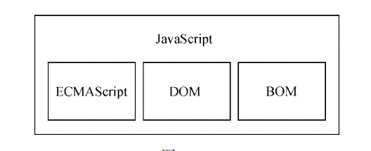
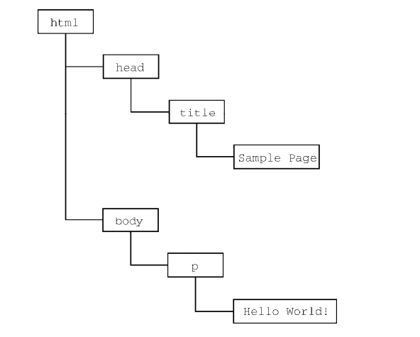

什么是js
为何学习 JavaScript？
JavaScript 是 web 开发者必学的三种语言之一：
- HTML 定义网页的内容
- CSS 规定网页的布局
- JavaScript 对网页行为进行编程
JavaScript 历史回顾
JavaScript 是，网景公司的 Brendan Eich 在 1995 年发明的。
它是为 Netscape 2 开发的，并于 1997 年成为 ECMA-262 标准。
1998 年，国际标准化组织（ISO）和国际电工委员会（IEC）也将 ECMAScript 采纳为标准（ISO/
IEC-16262）。自此以后，各家浏览器均以 ECMAScript 作为自己 JavaScript 实现的依据，虽然具体实现各有不同。
JavaScript 实现
完整的 JavaScript 实现包含以下几个部分（见图）：
- 核心（ECMAScript）
- 文档对象模型（DOM）
- 浏览器对象模型（BOM）

ECMAScript
ECMAScript，即 ECMA-262 定义的语言，并不局限于 Web 浏览器。ECMA-262 将这门语言作为一个基准来定义，以便在它之上再构建更稳健的脚本语言。
Web 浏览器只是 ECMAScript 实现可能存在的一种宿主环境（host environment）。宿主环境提供ECMAScript 的基准实现和与环境自身交互必需的扩展。扩展（比如 DOM）使用 ECMAScript 核心类型和语法，提供特定于环境的额外功能。其他宿主环境还有服务器端 JavaScript 平台 Node.js 和即将被淘汰的 Adobe Flash。
在基本的层面，它描述这门语言的如下部分：
- 语法
- 类型
- 语句
- 关键字
- 保留字
- 操作符
- 全局对象
类型
ECMAScript 只是对实现这个规范描述的所有方面的一门语言的称呼。JavaScript 实现了
ECMAScript，而 Adobe ActionScript 同样也实现了 ECMAScript。
ECMAScript 版本
- ECMAScript 1（1997）
- ECMAScript 2（1998）
- ECMAScript 3（1999）
更新了字符串处理、错误定义和数值输出。
- ECMAScript 4（发布前放弃）
- ECMAScript 5（2009）
原生的解析和序列化 JSON 数据的 JSON 对象、方便继承和高级属性定义的方法，以及新的增强 ECMAScript 引擎解释和执行代码能力的严格模式。
- ECMAScript 6（2015）ES6、ES2015
正式支持了类、模块、迭代器、生成器、箭头函数、期约、反射、代理和众多新的数据类型。
- ECMAScript 7（2016）ES7、ES2016
少量语法层面的增强，如 Array.prototype.includes 和指数操作符。
- ECMAScript 8（2017）ES8、ES2017
增加了异步函数（async/await）、SharedArrayBuffer 及 Atomics API，以及Object.values()/Object.entries()/Object. getOwnPropertyDescriptors()和字符串填充方法，另外明确支持对象字面量最后的逗号。
- ECMAScript 9（2018）ES9、ES2018
异步迭代、剩余和扩展属性、一组新的正则表达式特性、Promise finally()，模板字面量。
- ECMAScript 10（2019）ES10、ES2019
增加了 Array.prototype. flat()/flatMap()、String.prototype.trimStart()/trimEnd()、Object.fromEntries()方法，以及 Symbol.prototype.description 属性，明确定义了 Function.prototype.toString()的返回值并固定了 Array.prototype.sort()的顺序。另外，这次修订解决了与 JSON 字符串兼容的问题，并定义了 catch 子句的可选绑定。
ECMAScript 符合性是什么意思
ECMA-262 阐述了什么是 ECMAScript 符合性。要成为 ECMAScript 实现，必须满足下列条件：
- 支持 ECMA-262 中描述的所有“类型、值、对象、属性、函数，以及程序语法与语义”；
- 支持 Unicode 字符标准。
此外，符合性实现还可以满足下列要求。
- 增加 ECMA-262 中未提及的“额外的类型、值、对象、属性和函数”。ECMA-262 所说的这些额外内容主要指规范中未给出的新对象或对象的新属性。
- 支持 ECMA-262 中没有定义的“程序和正则表达式语法”（意思是允许修改和扩展内置的正则表达式特性）。
以上条件为实现开发者基于 ECMAScript 开发语言提供了极大的权限和灵活度，也是其广受欢迎的原因之一
浏览器对 ECMAScript 的支持
所有浏览器都完全支持 ECMAScript 3。
所有现代浏览器都完全支持 ECMAScript 5。
DOM
文档对象模型（DOM，Document Object Model）是一个应用编程接口（API），用于在 HTML 中使用扩展的 XML。DOM 将整个页面抽象为一组分层节点。HTML 或 XML 页面的每个组成部分都是一种节点，包含不同的数据。比如下面的 HTML 页面：
Hello World!
这些代码通过 DOM 可以表示为一组分层节点，如图 1-2 所示。

DOM 通过创建表示文档的树，让开发者可以随心所欲地控制网页的内容和结构。使用 DOM API，可以轻松地删除、添加、替换、修改节点。
为什么 DOM 是必需的
在IE4 和 Netscape Navigator 4 支持不同形式的动态 HTML（DHTML）的情况下，开发者首先可以做到不刷新页面而修改页面外观和内容。这代表了 Web 技术的一个巨大进步，但也暴露了很大的问题。由于网景和微软采用不同思路开发 DHTML，开发者写一个 HTML 页面就可以在任何浏览器中运行的好日子就此终结。
为了保持 Web 跨平台的本性，必须要做点什么。人们担心如果无法控制网景和微软各行其是，那么 Web 就会发生分裂，导致人们面向浏览器开发网页。就在这时，万维网联盟（W3C，World Wide WebConsortium）开始了制定 DOM 标准的进程
DOM 级别
1998 年 10 月，DOM Level 1 成为 W3C 的推荐标准。这个规范由两个模块组成：****DOM Core 和 DOM HTML。前者提供了一种映射 XML 文档，从而方便访问和操作文档任意部分的方式；后者扩展了前者，并增加了特定于 HTML 的对象和方法。
注意 DOM 并非只能通过 JavaScript 访问，而且确实被其他很多语言实现了。不过对于浏
览器来说，DOM 就是使用 ECMAScript 实现的，如今已经成为 JavaScript 语言的一大组成
部分。
DOM Level 1 的目标是映射文档结构，而 DOM Level 2 的目标则宽泛得多。这个对最初 DOM 的扩展增加了对（DHTML 早就支持的）鼠标和用户界面事件、范围、遍历（迭代 DOM 节点的方法）的支持，而且通过对象接口支持了层叠样式表（CSS）。另外，DOM Level 1 中的 DOM Core 也被扩展以包含对 XML 命名空间的支持。
DOM Level 2 新增了以下模块，以支持新的接口。
- DOM 视图：描述追踪文档不同视图（如应用 CSS 样式前后的文档）的接口。
- DOM 事件：描述事件及事件处理的接口。
- DOM 样式：描述处理元素 CSS 样式的接口。
- DOM 遍历和范围：描述遍历和操作 DOM 树的接口。
DOM Level 3 进一步扩展了 DOM，增加了以统一的方式加载和保存文档的方法（包含在一个叫 DOM Load and Save 的新模块中），还有验证文档的方法（DOM Validation）。在 Level 3 中，DOM Core 经过扩展支持了所有 XML 1.0 的特性，包括 XML Infoset、XPath 和 XML Base。
目前，W3C 不再按照 Level 来维护 DOM 了，而是作为 DOM Living Standard 来维护，其快照称为DOM4。DOM4 新增的内容包括替代 Mutation Events 的 Mutation Observers。
其他 DOM
除了 DOM Core 和 DOM HTML 接口，有些其他语言也发布了自己的 DOM 标准。下面列出的语言是基于 XML 的，每一种都增加了该语言独有的 DOM 方法和接口：
- 可伸缩矢量图（SVG，Scalable Vector Graphics）
- 数学标记语言（MathML，Mathematical Markup Language）
- 同步多媒体集成语言（SMIL，Synchronized Multimedia Integration Language）
此外，还有一些语言开发了自己的 DOM 实现，比如 Mozilla 的 XML 用户界面语言（XUL，XML UserInterface Language）。不过，只有前面列表中的语言是 W3C 推荐标准。
Web 浏览器对 DOM 的支持情况
DOM 标准在 Web 浏览器实现它之前就已经作为标准发布了
BOM
IE3 和 Netscape Navigator 3 提供了浏览器对象模型（BOM） API，用于支持访问和操作浏览器的窗口。使用 BOM，开发者可以操控浏览器显示页面之外的部分。而 BOM 真正独一无二的地方，当然也是问题最多的地方，就是它是唯一一个没有相关标准的 JavaScript 实现。HTML5 改变了这个局面，这个版本的 HTML 以正式规范的形式涵盖了尽可能多的 BOM 特性。由于 HTML5 的出现，之前很多与 BOM有关的问题都迎刃而解了。
总体来说，BOM 主要针对浏览器窗口和子窗口（frame），不过人们通常会把任何特定于浏览器的扩展都归在 BOM 的范畴内。比如，下面就是这样一些扩展：
- 弹出新浏览器窗口的能力；
- 移动、缩放和关闭浏览器窗口的能力；
- navigator 对象，提供关于浏览器的详尽信息；
- location 对象，提供浏览器加载页面的详尽信息；
- screen 对象，提供关于用户屏幕分辨率的详尽信息；
- performance 对象，提供浏览器内存占用、导航行为和时间统计的详尽信息；
- 对 cookie 的支持；
- 其他自定义对象，如 XMLHttpRequest 和 IE 的 ActiveXObject。
因为在很长时间内都没有标准，所以每个浏览器实现的都是自己的 BOM。有一些所谓的事实标准，比如对于 window 对象和 navigator 对象，每个浏览器都会给它们定义自己的属性和方法。现在有了HTML5，BOM 的实现细节应该会日趋一致。
JavaScript 版本
小结
JavaScript 是一门用来与网页交互的脚本语言，包含以下三个组成部分。
- ECMAScript：由 ECMA-262 定义并提供核心功能。
- 文档对象模型（DOM）：提供与网页内容交互的方法和接口。
- 浏览器对象模型（BOM）：提供与浏览器交互的方法和接口。
JavaScript 的这三个部分得到了五大 Web 浏览器（IE、Firefox、Chrome、Safari 和 Opera）不同程度的支持。所有浏览器基本上对 ES5（ECMAScript 5）提供了完善的支持，而对 ES6（ECMAScript 6）和ES7（ECMAScript 7）的支持度也在不断提升。这些浏览器对 DOM 的支持各不相同，但对 Level 3 的支持日益趋于规范。HTML5 中收录的 BOM 会因浏览器而异，不过开发者仍然可以假定存在很大一部分公共特性。